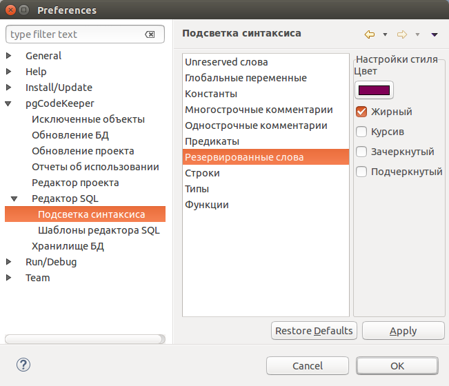

Настройки управляющие подсветкой синтаксиса

На странице настроек pgCodeKeeper -> Редактор SQL -> Подсветка синтаксиса Вы можете установить цвет и стиль шрифта, которым будет отображаться соответствующий синтаксис в SQL редакторе.